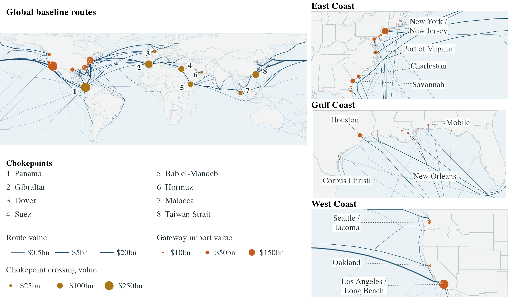

1. Value the imports
Census records identify imports by U.S. port, trading partner, six-digit product and vessel class. Each flow receives its average customs value over the preceding three calendar years. The basket changes once a year.
Simon Fuchs & Fernando Leibovici
Exposure of U.S. imports to disrupted shipping routes.
Vessel-import-weighted route shortfalls, in index points
100 times average route log shortfall, weighted by vessel-import value. Not a percentage of imports lost. Dashed markers locate January 2024 and March 2026. Persistent disruption enters the rolling traffic normal, so lower readings need not imply recovery to pre-disruption traffic.
Chokepoint contributions sum to the national reading.
Within-group pressure, index points
Each group uses its own vessel-import denominator. These two lines are not additive.
Eight monitored waterways
Locations are schematic points; traffic pressure is measured at the gate, not across the whole sea.
January 2022 onward; same units as the selected measure above
Circle area: national contribution. Color: pressure on assigned routes.
Map shows contiguous coastal gateways; national totals and the full data retain all 99 gateways, including inland and noncontiguous locations.
| Gateway | Region |
|---|
Contribution equals route pressure times assigned imports' share of the national basket. <0.01 denotes a small positive contribution; n/a means no assigned import value in this basket. Assigned value is annual average customs value in the selected year's three-year basket. National totals and the full data retain all 99 gateways.
The same construction used in the accompanying methodology note
Census records identify imports by U.S. port, trading partner, six-digit product and vessel class. Each flow receives its average customs value over the preceding three calendar years. The basket changes once a year.
PortWatch's 2019 export activity allocates each partner's trade across foreign loading ports. SeaRoute assigns feasible shortest paths to the U.S. gateway. The 2019 route shares remain fixed, including when ships later reroute.
Daily container and other-vessel activity is compared with its seasonal normal over the preceding three years. Traffic below normal produces a positive log shortfall. Each route takes the largest monthly shortfall among its monitored gates, avoiding serial double counting.
The national index is 100 times the vessel-import-weighted average route shortfall. Products, ports and binding gates partition that total. Unassigned imports remain in the denominator and contribute zero measured pressure.

Higher readings mean more U.S. maritime import value is exposed to larger traffic shortfalls. They are not inflation estimates or percentages of imports lost. The measure covers U.S. import routes, not all global shipping or the world oil-price channel.
Persistent disruption eventually enters the rolling traffic normal. The fall around early 2026 does not, by itself, show recovery to pre-Red Sea traffic. Changes in the annual trade basket can also affect January readings.
This is a dated research release, not a live feed. Only PortWatch observations were refreshed on October 1; the retained Census baskets and baseline routes were not newly acquired. No September monthly reading is published.
Complete dashboard data